专业实践
传媒专业是一个十分重视实践的学科，理论知识要在实践中得到验证和深化。我在本科期间，高质量完成了三段实习经历，涵盖传统媒体、外宣媒体、企业公关、活动策划等多岗位，锻炼了扎实的媒体实践技能，并荣获了多项高水平专业赛事奖项
代表性专业奖项
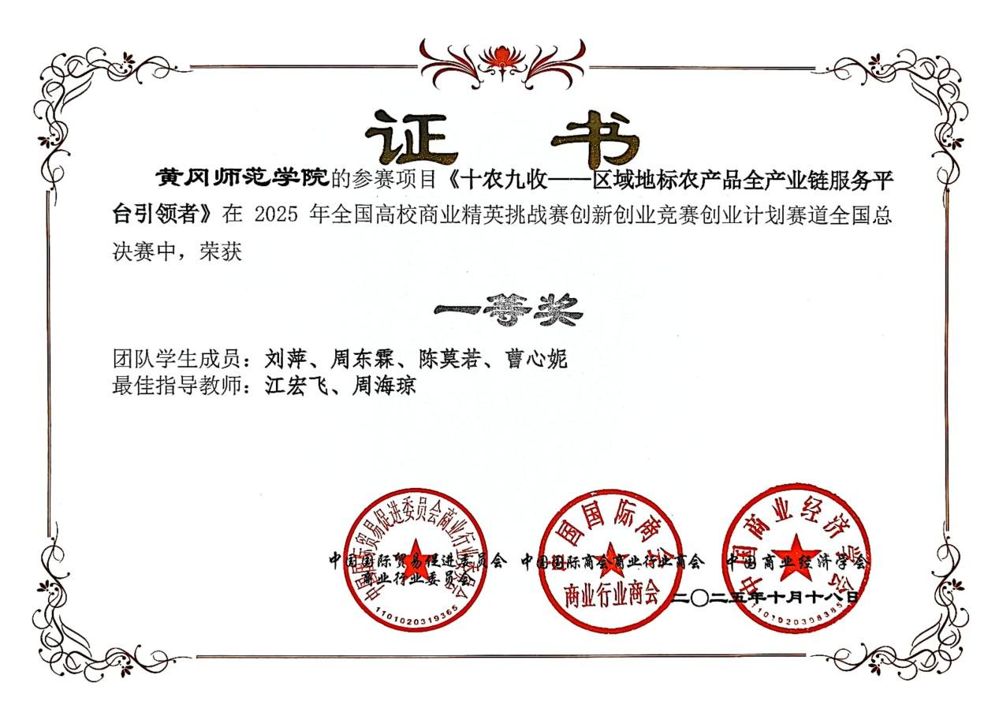
全国高校商业精英挑战赛创新创业竞赛创业计划赛道全国总决赛 一等奖
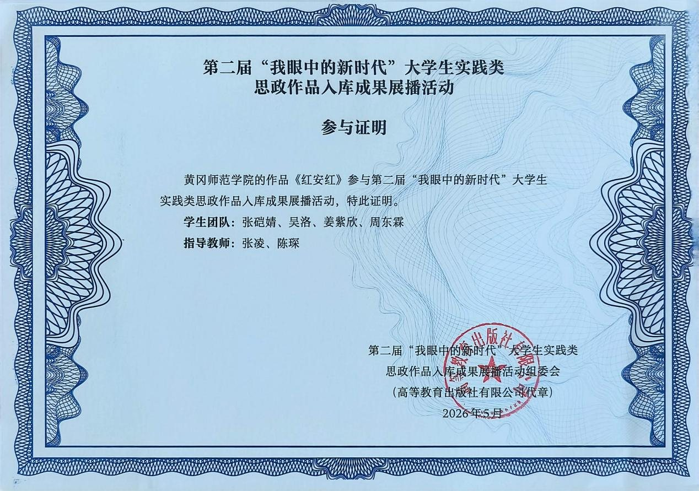
第二届“我眼中的新时代”大学生实践类思政作品入库成果展播活动
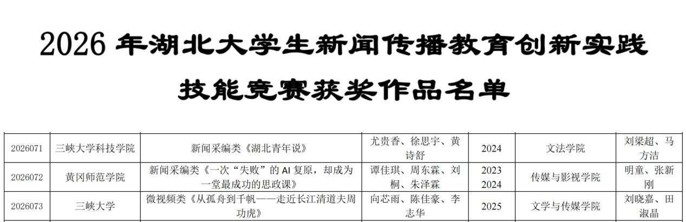
2026年湖北省新闻传播教育创新实践技能竞赛 新闻采编类 二等奖（图为大赛官方获奖公示，证书正在制作中）
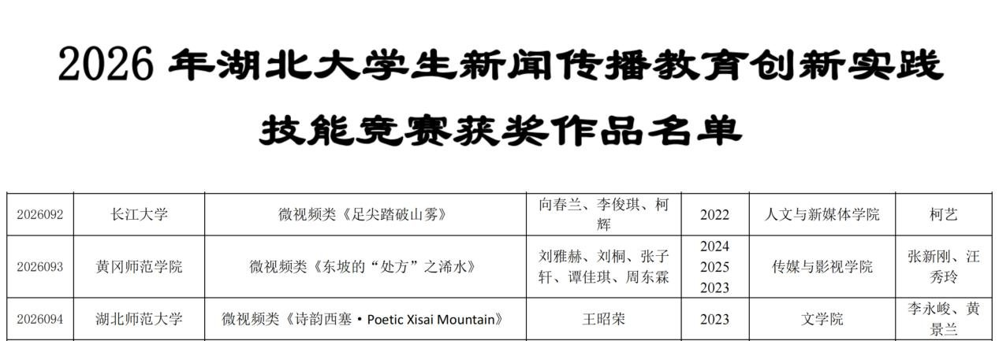
2026年湖北省新闻传播教育创新实践技能竞赛 微视频类 二等奖（图为大赛官方获奖公示，证书正在制作中）
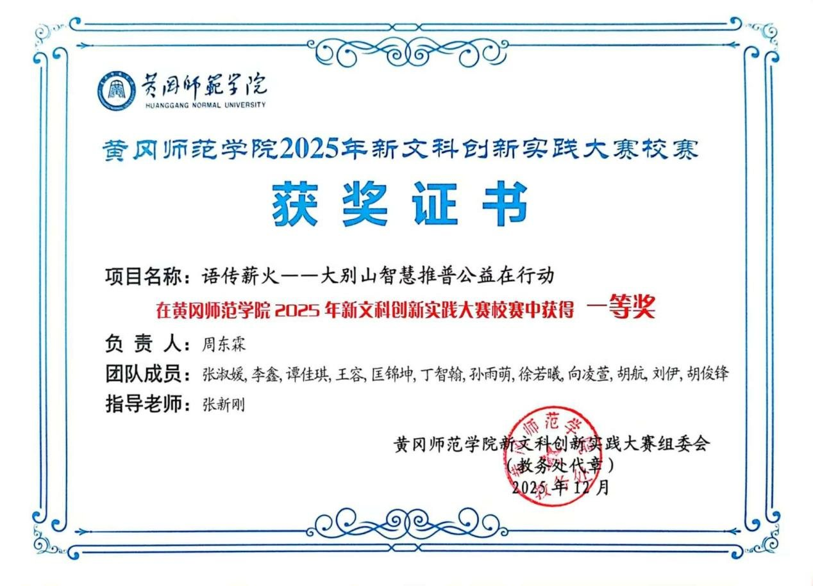
2025年大学生新文科实践创新大赛黄冈师范学院校赛一等奖
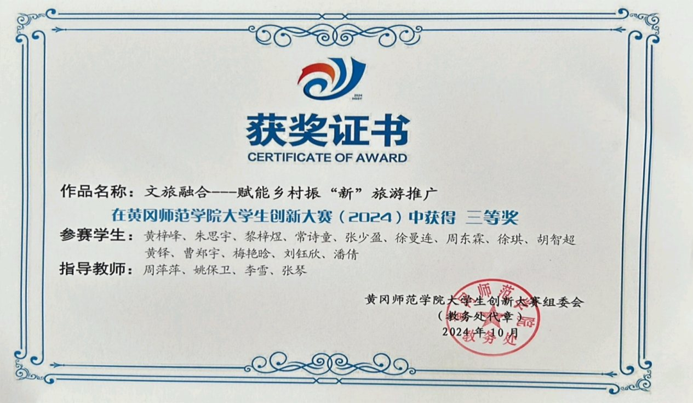
2024年中国国际大学生创新大赛黄冈师范学院校赛三等奖
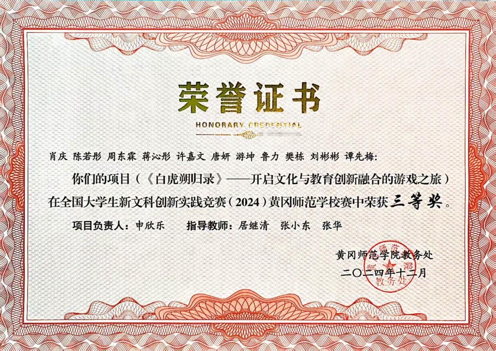
2024年大学生新文科实践创新大赛黄冈师范学院校赛三等奖
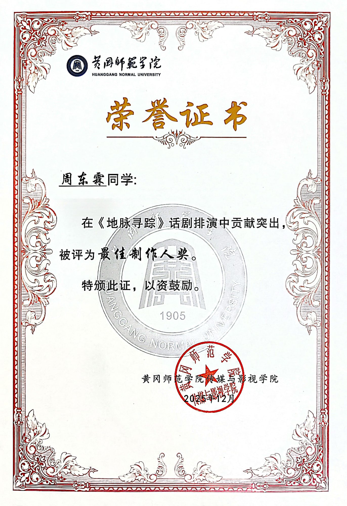
国家级原创话剧《地脉寻踪》最佳制作人奖
实习经历
梧桐树保险经纪有限公司
- 协助开展媒介公关，支持企业打造对外形象、应对突发事件及日常舆情监测工作
- 参与企业大型活动的策划、起草及执行，协助统筹企业日常事务
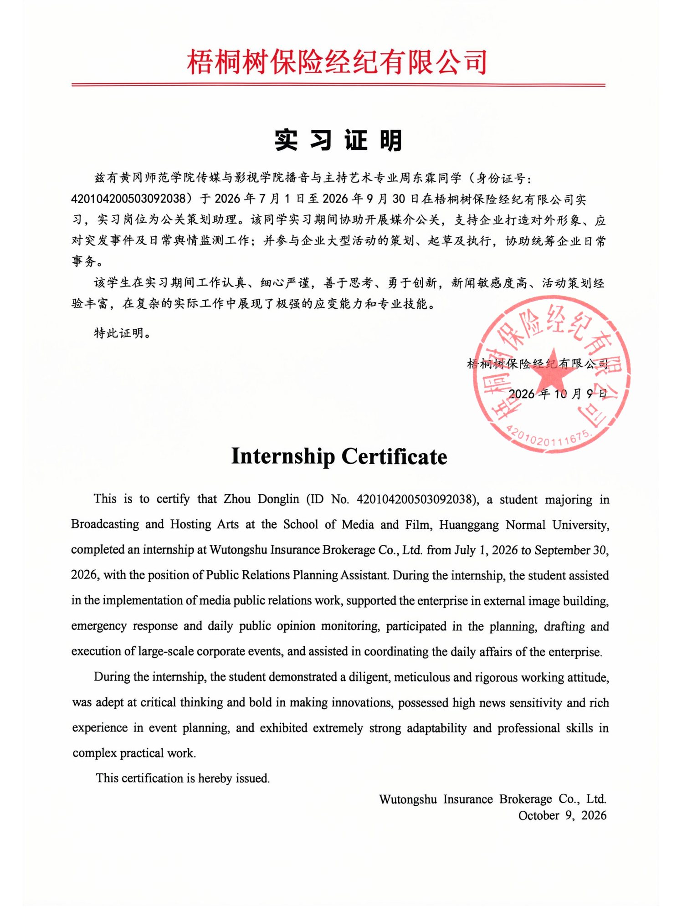
武汉国际传播中心
- 参与“武汉发布”“武汉国传”“武汉外事港澳”等系列新媒体平台的日常运营，协助内容编辑与发布
- 实习期间编辑并发布 20 余篇融媒作品，涵盖适配不同传播平台的文本与视觉内容；参与创作的作品在全网累计获得超过 100 万次浏览量
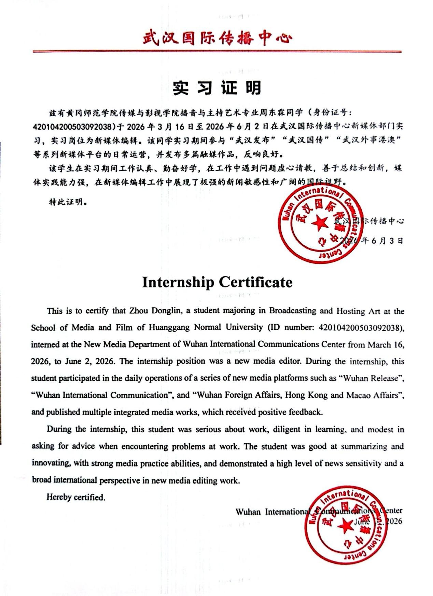
黄冈市融媒体中心
- 协助新闻节目制作，现场参与拍摄与采访，对重大事件进行报道，实习期间独立完成了 10 余部短视频的全流程制作
- 实习期间撰写 20 余篇新闻报道，其中 1 篇发表于国家重点新闻网站中国网（China.com.cn），另有 10 余篇发表于省级主流媒体；为云上黄冈、黄州新闻及黄冈市文化和旅游局等平台提供优质文字及视频内容
- 制作一部文化类微纪录片，发布于央视频（中央广播电视总台新媒体平台）
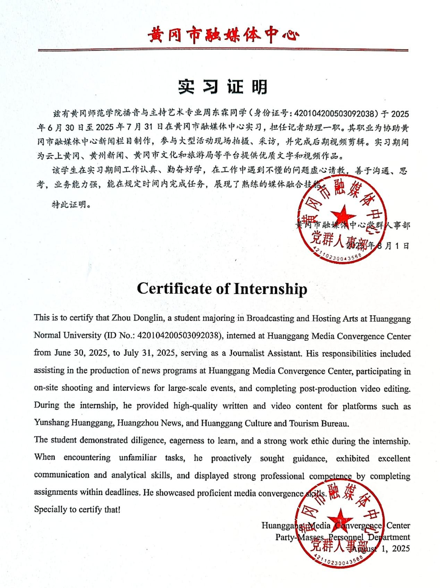
实习纪实
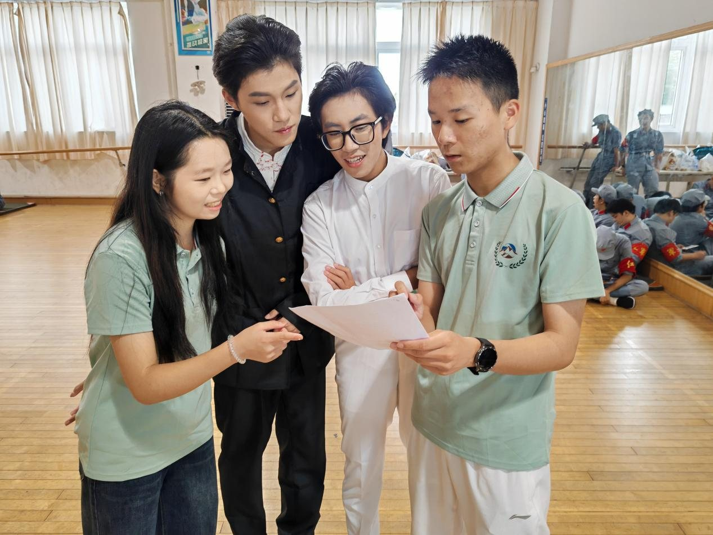
我给实习团队成员讲解活动拍摄流程
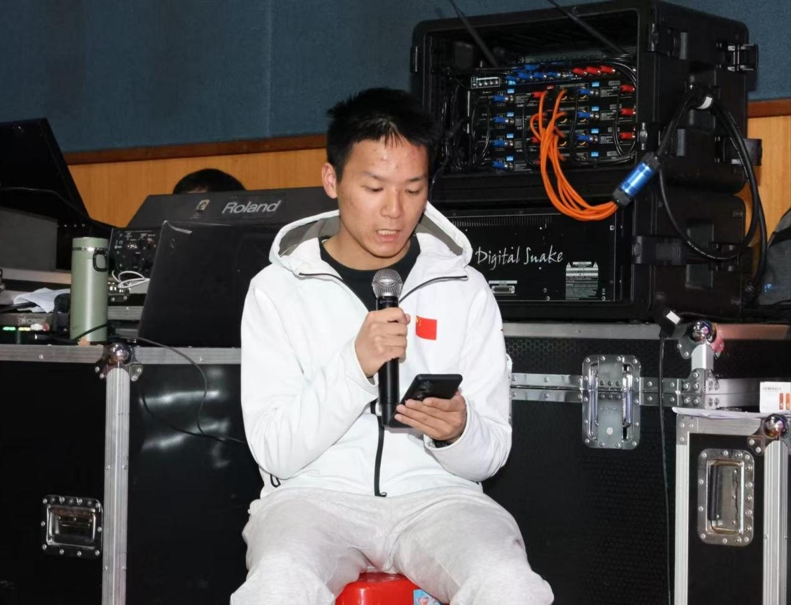
我实习期间在后台主持大型公演活动
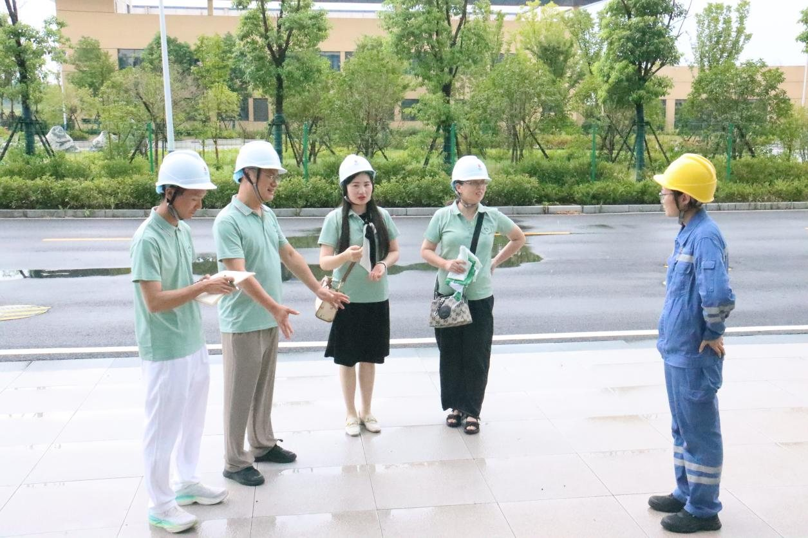
我实习期间随团队参观黄冈中电山水环保发电有限公司
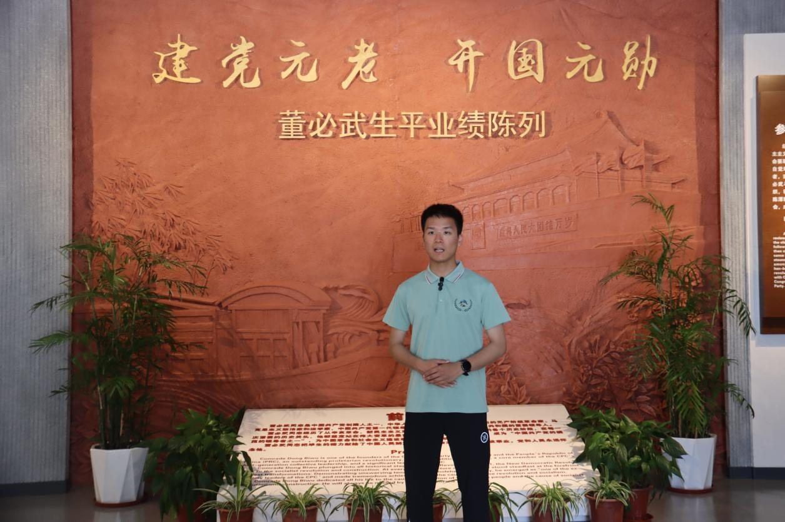
我在实习期间出镜口播董必武事迹